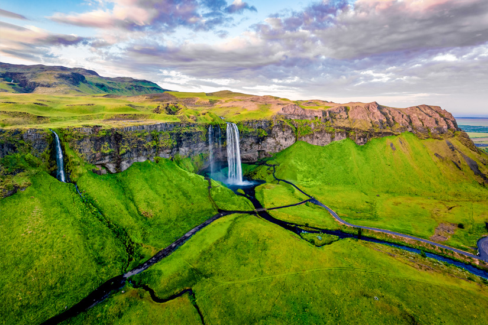
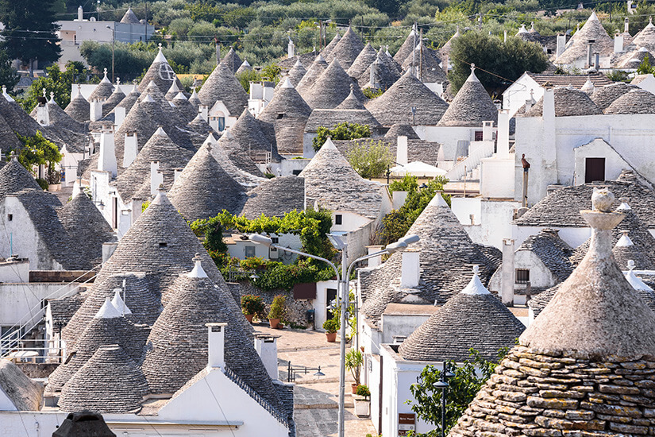

Island
Island ist ein faszinierendes Reiseziel und unter anderem die Heimat vieler Wasserfälle. Zu den schönsten Naturschauspielen lädt die Südküste ein. Die Ringstraße N1 führt Besucher direkt zum Wasserfall Seljalandsfoss. Er stürzt 66 Meter in die Tiefe und das Wasser sammelt sich unter ihm in einem See. Die steile Klippe war einst die Meeresküste, bis sich die Landmasse verschob und die Steilküste als Abbruchkante hinterließ. Hier geht's lang

Den Anblick der Trulli-Häuser kennen viele Menschen von Postkarten. Doch die wie aus einem Fantasy-Roman stammenden Häuser in natura zu sehen, ist Faszination pur. Diesen Wunsch erfüllt ihr euch mit einer Reise nach Alberobello in Apulien. Ganz in der Nähe der italienischen Hafenstadt Bari leben hier rund 12.000 Menschen. Ein Spaziergang durch die kleine Stadt Alberobello führt an rund 1.000 Trulli-Häusern aus weißem Kalkfelsen samt typischem Kegeldach aus Stein vorbei. In diese Richtung
Italien
 Quelle <---Finden Sie hier
Quelle <---Finden Sie hier